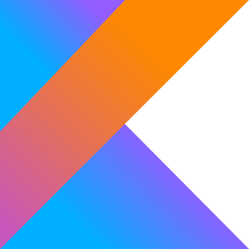

-

JavaScript
JavaScript обычно используется как встраиваемый язык для программного доступа к объектам приложений. Наиболее широкое применение находит в браузерах как язык сценариев для придания интерактивности веб-страницам.
-

HTML
HTML (от англ. HyperText Markup Language — «язык гипертекстовой разметки») — HTML (или XHTML). Язык HTML интерпретируется браузерами; полученный в результате интерпретации форматированный текст отображается на экране монитора компьютера или мобильного устройства.
-

CSS
CSS (англ. Cascading Style Sheets — каскадные таблицы стилей) — формальный язык описания внешнего вида документа, написанного с использованием языка разметки.
-

JQuery
jQuery — библиотека JavaScript, фокусирующаяся на взаимодействии JavaScript и HTML. Библиотека jQuery помогает легко получать доступ к любому элементу DOM, обращаться к атрибутам и содержимому элементов DOM, манипулировать ими. Также библиотека jQuery предоставляет удобный API для работы с AJAX.
-

PHP
PHP (англ. PHP: Hypertext Preprocessor — «PHP: препроцессор гипертекста»; первоначально Personal Home Page Tools — «Инструменты для создания персональных веб-страниц») — скриптовый язык общего назначения, интенсивно применяемый для разработки веб-приложений. В настоящее время поддерживается подавляющим большинством хостинг-провайдеров и является одним из лидеров среди языков, применяющихся для создания динамических веб-сайтов.
-

Python
Python высокоуровневый язык программирования общего назначения, ориентированный на повышение производительности разработчика и читаемости кода. Синтаксис ядра Python минималистичен. В то же время стандартная библиотека включает большой объём полезных функций.
-

Kotlin
Kotlin (Ко́тлин) — статически типизированный язык программирования, работающий поверх JVM и разрабатываемый компанией JetBrains. Компилируется также в JavaScript и на другие платформы через инфраструктуру LLVM. Язык назван в честь острова Котлин в Финском заливе, на котором расположен город Кронштадт.
-

Ruby
Ruby (англ. ruby — рубин) — динамический, рефлективный, интерпретируемый высокоуровневый язык программирования. Язык обладает независимой от операционной системы реализацией многопоточности, строгой динамической типизацией, сборщиком мусора и многими другими возможностями. По особенностям синтаксиса он близок к языкам Perl и Eiffel, по объектно-ориентированному подходу — к Smalltalk. Также некоторые черты языка взяты из Python, Lisp, Dylan и Клу.
{kind=link}


All rights recerved ©